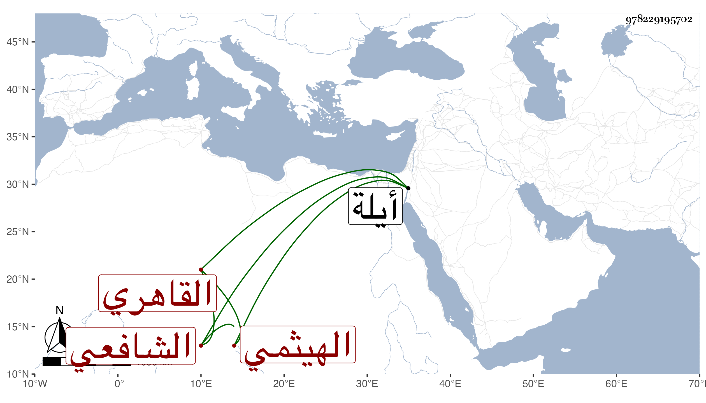

0902Sakhawi.DawLamic.ITO20230111-ara1.EIS1600.978229195702
Biography ID: 978229195702
136
محمد بن عبد الكريم بن محمد بن علي بن محمد بن عبد الكريم بن صالح ابن شهاب بن محمد البدر بن كريم الدين بن الشمس الهيثمي الأصل القاهري الشافعي الماضي أبوه والآتي جده ويعرف بالهيثمي . ولد سنة أربع عشرة وثمانمائة تقريبا وحفظ القرآن والتنقيح في الفقه للولي العراقي وعرضه واشتغل يسيرا على الشهاب الحناوي والبدر النسابة وتزوج ابنته وتميز في الوراقة وكتابة الشروط وخطب أحيانا ببعض الجوامع ، واستقر في كتابة الغيبة بالبيبرسية بعد الشمس العباسي وراج فيها ، وحج وسافر مرارا وكان يحمل معه بالكراء في كل سنة جماعة من المعتبرين وغيرهم فيشتط عليهم في الكراء ويكلفونه بحيث يوسع البابكة لذلك ومع هذا فلم يظفر بطائل ، وآل أمره إلى أن توعك وهو راجع أياما ثم مات بعقبة أيلة في حادي عشر المحرم سنة سبعين ودفن فيها بجوار جده عفا الله عنه .
